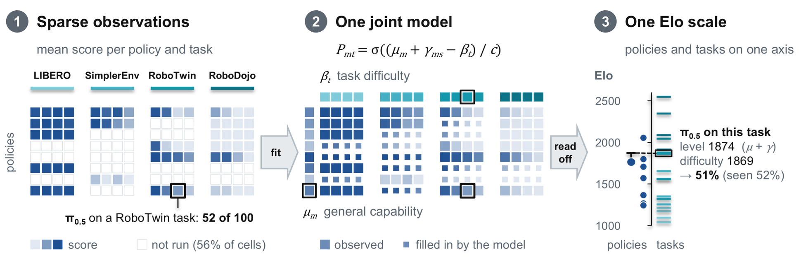

8.5 months
Time for average odds to double
Policies released 8.5 months apart differ, on average, by a factor of two in their odds of success on the same task.
A Meta-Analysis on Robot Manipulation Benchmarks
vs. VLA, WAM, and LLM Agents
Interactive figure
Hover to explore · Click to pin. Keyboard: Tab into the chart, use arrow keys to move between items, then press Enter to pin a selection.
Swipe the chart to see later years.
Robot manipulation policies are improving quickly, but each simulation benchmark distinguishes them within a limited range. Older benchmarks saturate, while on newer ones most policies reach only single-digit success rates. Our statistical framework links benchmarks through the policies they share, placing policy capabilities and task difficulties on one Elo scale and making comparisons across benchmarks and time possible. We apply the framework to 44 policies released between December 2022 and October 2026 across LIBERO, SimplerEnv, RoboTwin 2.0, and RoboDojo, covering 212 test cases and 395,092 trials. On this scale, a policy released 8.5 months later has, on average, twice the odds of success on the same task. In the last six months, the best policy improved about five times as much as in an average six-month period since 2022, and since G0.5 (June 2026) the SOTA has risen about ten times as fast as before. Benchmark difficulty rises about twice as fast as average policy capability, but if the SOTA pace since G0.5 continues, RoboDojo could reach the paper’s saturation threshold by September 2027.
8.5 months
Policies released 8.5 months apart differ, on average, by a factor of two in their odds of success on the same task.
~10×
Since G0.5 (June 2026), the SOTA has risen about 730 Elo per year, ten times its pace of about 70 Elo per year before.
Sep 2027
At the pace since G0.5, the SOTA policy is projected to reach an expected score of at least 50% on 90% of RoboDojo’s tasks.
Our framework fits one model to per-task results across benchmarks. Policies evaluated on more than one benchmark link their scales. The model estimates each policy’s general capability, its adjustment for a particular setting, and the difficulty of each test case. When a policy’s level on a setting matches a task’s difficulty, its expected score is 50%.

@unpublished{anonymous2026embodied,
title = {How Much Has Embodied {AI} Progressed? A Meta-Analysis on
Robot Manipulation Benchmarks vs. {VLA}, {WAM}, and {LLM} Agents},
author = {{Anonymous Authors}},
year = {2026},
note = {Anonymous manuscript}
}